vignettes/topic5_01_similarity.Rmd
topic5_01_similarity.RmdThere are two types of methods to calculate similarities between functional terms.
We demonstrate it with significant terms from an ORA analysis.
library(GSEAtraining)
lt = readRDS(system.file("extdata", "ora.rds", package = "GSEAtraining"))
diff_gene = lt$diff_gene
diff_gene = convert_to_entrez_id(diff_gene)## ## gene id might be SYMBOL (p = 0.980 )## 'select()' returned 1:many mapping between keys and columnsFirst we use a small collection of gene sets, the KEGG pathways.
df = read.table(url("https://rest.kegg.jp/link/pathway/hsa"), sep = "\t")
df[, 1] = gsub("hsa:", "", df[, 1])
df[, 2] = gsub("path:", "", df[, 2])
head(df)## V1 V2
## 1 10327 hsa00010
## 2 124 hsa00010
## 3 125 hsa00010
## 4 126 hsa00010
## 5 127 hsa00010
## 6 128 hsa00010We also retrieve the pathway names.
pathway_names = read.table(url("https://rest.kegg.jp/list/pathway/hsa"), sep = "\t")
pathway_names = structure(gsub(" - Homo .*$", "", pathway_names[, 2]), names = pathway_names[, 1])Perform ORA analysis with clusterProfiler. There are 33 significant pathways.
## ## clusterProfiler v4.14.4 Learn more at https://yulab-smu.top/contribution-knowledge-mining/
##
## Please cite:
##
## Guangchuang Yu, Li-Gen Wang, Yanyan Han and Qing-Yu He.
## clusterProfiler: an R package for comparing biological themes among
## gene clusters. OMICS: A Journal of Integrative Biology. 2012,
## 16(5):284-287##
## Attaching package: 'clusterProfiler'## The following object is masked from 'package:stats':
##
## filter
tb = enricher(diff_gene, TERM2GENE = df[, 2:1])
sig_pathways = as.data.frame(tb)$ID
gs_pathway = split(df[, 1], df[, 2])
gs_pathway = gs_pathway[sig_pathways]There are four similarity methods which are based on the counts:
Since Dice coeffcient is just a simple transformation from the Jaccard coeffcient, we only look at the following three methods:
m1 = term_similarity(gs_pathway, method = "jaccard")
m2 = term_similarity(gs_pathway, method = "overlap")
m3 = term_similarity(gs_pathway, method = "kappa")Values on diagonals of the three symmetric matrices are 1. Since other values in the matrices are much smaller than 1, we set the diagonals to NA to improve the heatmap visualization.
diag(m1) = NA
diag(m2) = NA
diag(m3) = NA
library(ComplexHeatmap)## Loading required package: grid## ========================================
## ComplexHeatmap version 2.22.0
## Bioconductor page: http://bioconductor.org/packages/ComplexHeatmap/
## Github page: https://github.com/jokergoo/ComplexHeatmap
## Documentation: http://jokergoo.github.io/ComplexHeatmap-reference
##
## If you use it in published research, please cite either one:
## - Gu, Z. Complex Heatmap Visualization. iMeta 2022.
## - Gu, Z. Complex heatmaps reveal patterns and correlations in multidimensional
## genomic data. Bioinformatics 2016.
##
##
## The new InteractiveComplexHeatmap package can directly export static
## complex heatmaps into an interactive Shiny app with zero effort. Have a try!
##
## This message can be suppressed by:
## suppressPackageStartupMessages(library(ComplexHeatmap))
## ========================================
Heatmap(m1, name = "jaccard") +
rowAnnotation(pathway_name = anno_text(pathway_names[rownames(m1)]))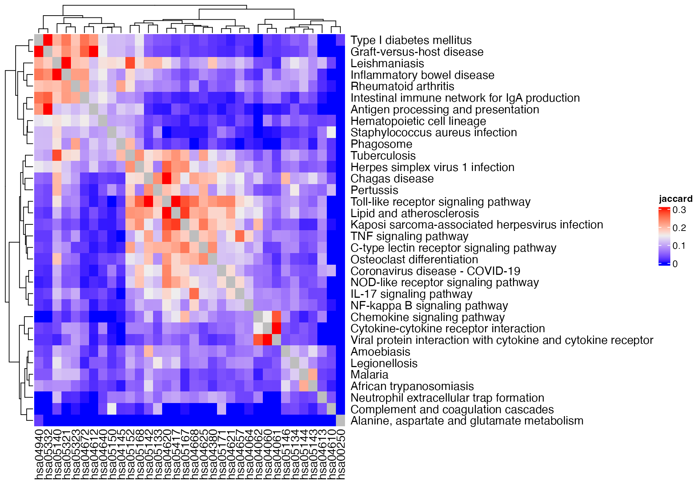
Heatmap(m2, name = "overlap") +
rowAnnotation(pathway_name = anno_text(pathway_names[rownames(m1)]))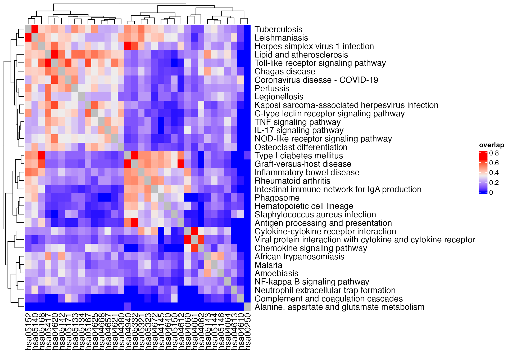
Heatmap(m3, name = "kappa") +
rowAnnotation(pathway_name = anno_text(pathway_names[rownames(m1)]))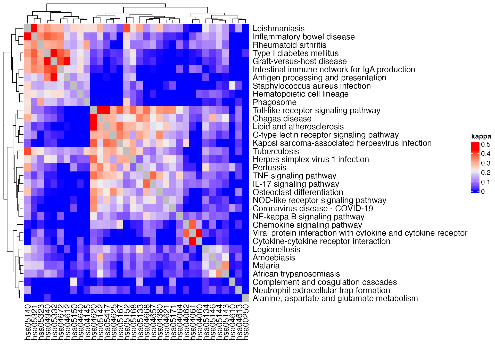
In previous examples, we use all genes in the gene sets. Next we restrict only to the DE genes.
m1 = term_similarity(gs_pathway, method = "jaccard", all = diff_gene)
m2 = term_similarity(gs_pathway, method = "overlap", all = diff_gene)
m3 = term_similarity(gs_pathway, method = "kappa", all = diff_gene)
diag(m1) = NA
diag(m2) = NA
diag(m3) = NA
Heatmap(m1, name = "jaccard") +
rowAnnotation(pathway_name = anno_text(pathway_names[rownames(m1)]))## The automatically generated colors map from the 1^st and 99^th of the
## values in the matrix. There are outliers in the matrix whose patterns
## might be hidden by this color mapping. You can manually set the color
## to `col` argument.
##
## Use `suppressMessages()` to turn off this message.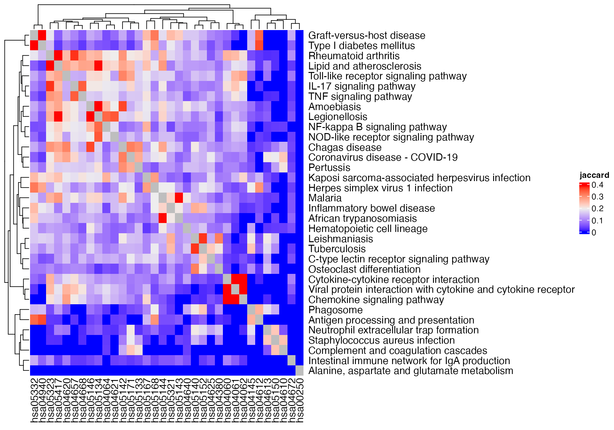
Heatmap(m2, name = "overlap") +
rowAnnotation(pathway_name = anno_text(pathway_names[rownames(m1)]))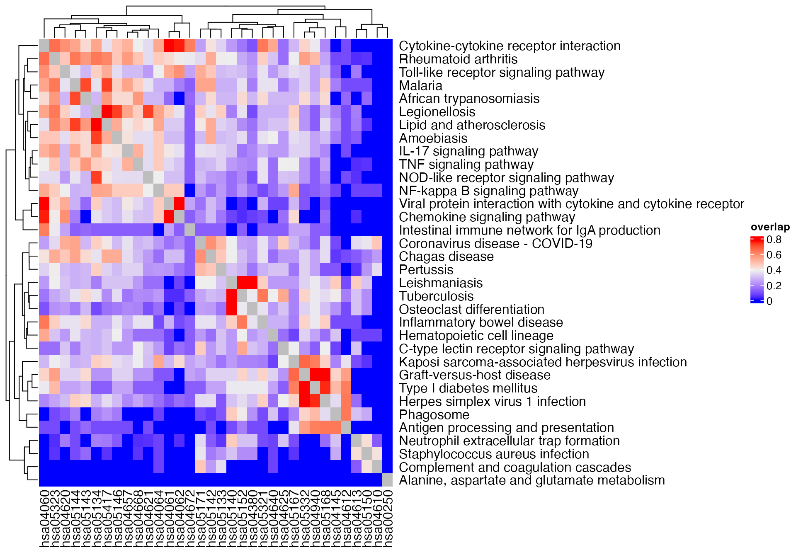
Heatmap(m3, name = "kappa") +
rowAnnotation(pathway_name = anno_text(pathway_names[rownames(m1)]))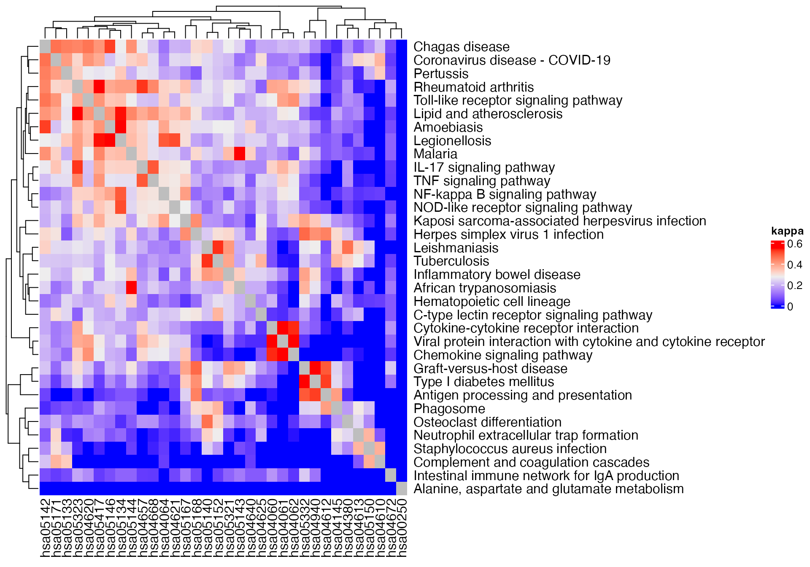
Next we use a much larger gene set collection: the GO gene sets:
library(org.Hs.eg.db)## Loading required package: AnnotationDbi## Loading required package: stats4## Loading required package: BiocGenerics##
## Attaching package: 'BiocGenerics'## The following objects are masked from 'package:stats':
##
## IQR, mad, sd, var, xtabs## The following objects are masked from 'package:base':
##
## anyDuplicated, aperm, append, as.data.frame, basename, cbind,
## colnames, dirname, do.call, duplicated, eval, evalq, Filter, Find,
## get, grep, grepl, intersect, is.unsorted, lapply, Map, mapply,
## match, mget, order, paste, pmax, pmax.int, pmin, pmin.int,
## Position, rank, rbind, Reduce, rownames, sapply, saveRDS, setdiff,
## table, tapply, union, unique, unsplit, which.max, which.min## Loading required package: Biobase## Welcome to Bioconductor
##
## Vignettes contain introductory material; view with
## 'browseVignettes()'. To cite Bioconductor, see
## 'citation("Biobase")', and for packages 'citation("pkgname")'.## Loading required package: IRanges## Loading required package: S4Vectors##
## Attaching package: 'S4Vectors'## The following object is masked from 'package:clusterProfiler':
##
## rename## The following object is masked from 'package:utils':
##
## findMatches## The following objects are masked from 'package:base':
##
## expand.grid, I, unname##
## Attaching package: 'IRanges'## The following object is masked from 'package:clusterProfiler':
##
## slice##
## Attaching package: 'AnnotationDbi'## The following object is masked from 'package:clusterProfiler':
##
## select
tb = enrichGO(gene = diff_gene, ont = "BP", OrgDb = org.Hs.eg.db)
sig_go = as.data.frame(tb)$IDThere are > 800 significant GO BP terms.
gs_bp = get_GO_gene_sets_from_orgdb(org.Hs.eg.db)## 'select()' returned 1:many mapping between keys and columns
gs_bp = gs_bp[sig_go]
m1 = term_similarity(gs_bp, method = "jaccard")
m2 = term_similarity(gs_bp, method = "overlap")
m3 = term_similarity(gs_bp, method = "kappa")
diag(m1) = NA
diag(m2) = NA
diag(m3) = NA
Heatmap(m1, name = "jaccard", show_row_names = FALSE, show_column_names = FALSE,
show_row_dend = FALSE, show_column_dend = FALSE)## The automatically generated colors map from the 1^st and 99^th of the
## values in the matrix. There are outliers in the matrix whose patterns
## might be hidden by this color mapping. You can manually set the color
## to `col` argument.
##
## Use `suppressMessages()` to turn off this message.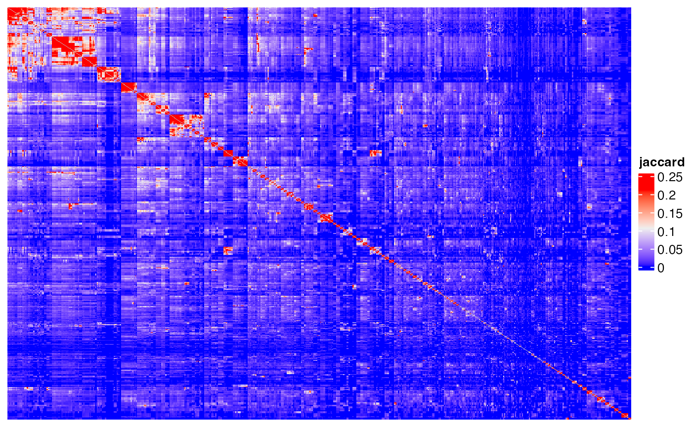
Heatmap(m2, name = "overlap", show_row_names = FALSE, show_column_names = FALSE,
show_row_dend = FALSE, show_column_dend = FALSE)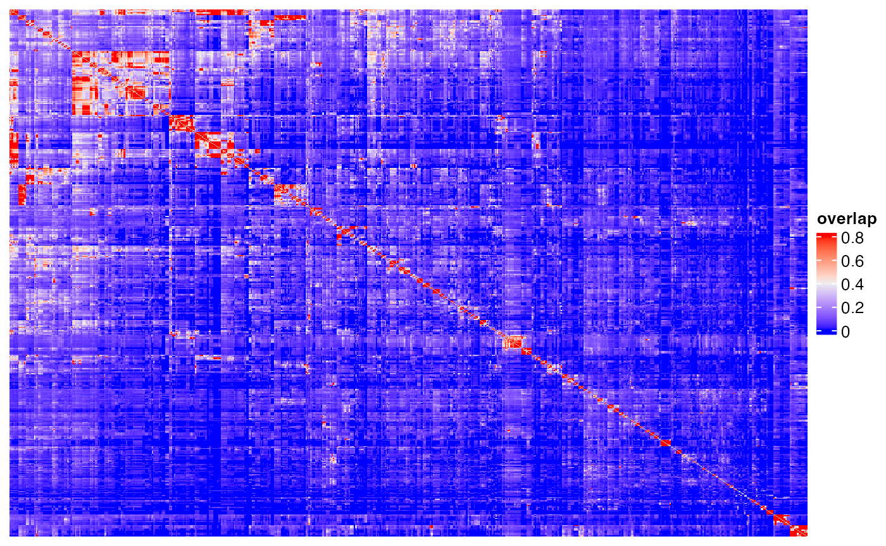
Heatmap(m3, name = "kappa", show_row_names = FALSE, show_column_names = FALSE,
show_row_dend = FALSE, show_column_dend = FALSE)## The automatically generated colors map from the 1^st and 99^th of the
## values in the matrix. There are outliers in the matrix whose patterns
## might be hidden by this color mapping. You can manually set the color
## to `col` argument.
##
## Use `suppressMessages()` to turn off this message.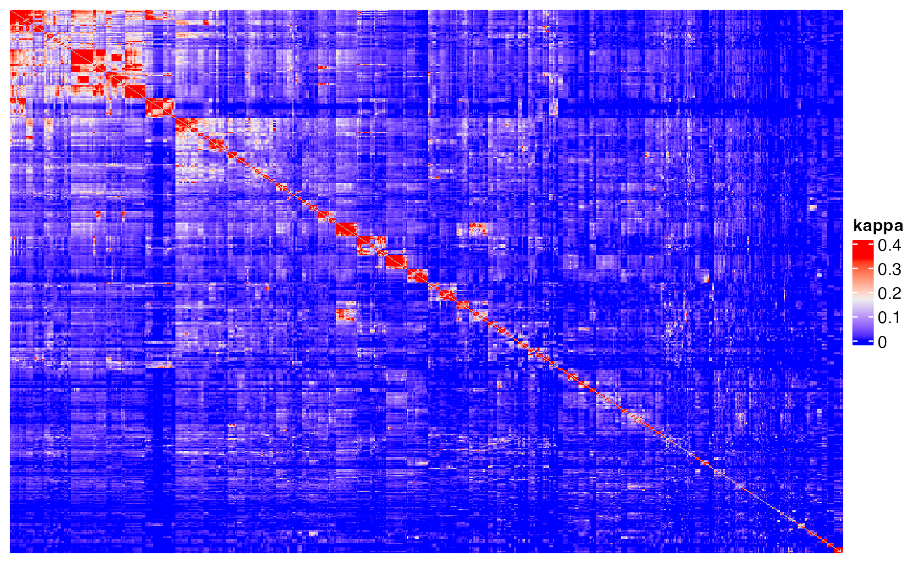
Or only restrict in DE genes
m1 = term_similarity(gs_bp, method = "jaccard", all = diff_gene)
m2 = term_similarity(gs_bp, method = "overlap", all = diff_gene)
m3 = term_similarity(gs_bp, method = "kappa", all = diff_gene)
diag(m1) = NA
diag(m2) = NA
diag(m3) = NA
Heatmap(m1, name = "jaccard", show_row_names = FALSE, show_column_names = FALSE,
show_row_dend = FALSE, show_column_dend = FALSE)## The automatically generated colors map from the 1^st and 99^th of the
## values in the matrix. There are outliers in the matrix whose patterns
## might be hidden by this color mapping. You can manually set the color
## to `col` argument.
##
## Use `suppressMessages()` to turn off this message.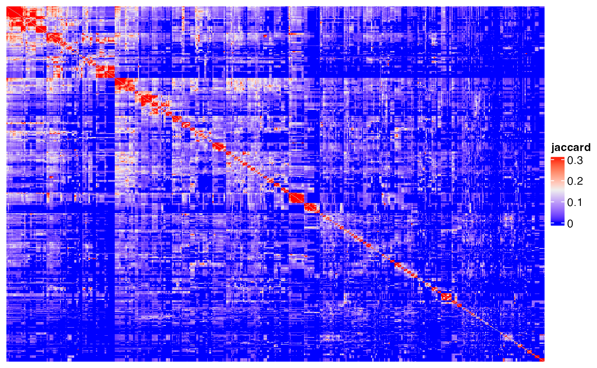
Heatmap(m2, name = "overlap", show_row_names = FALSE, show_column_names = FALSE,
show_row_dend = FALSE, show_column_dend = FALSE)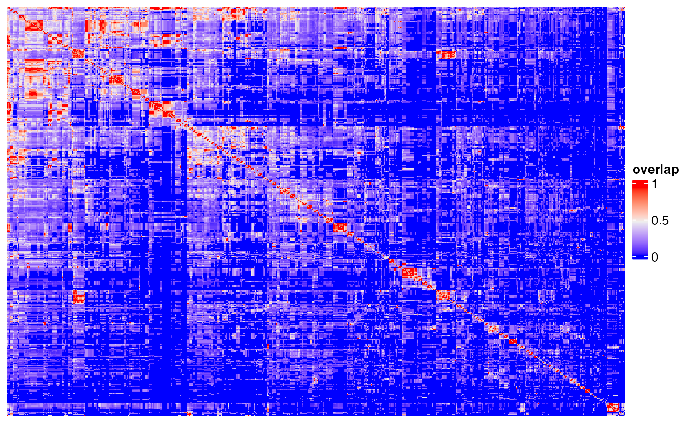
Heatmap(m3, name = "kappa", show_row_names = FALSE, show_column_names = FALSE,
show_row_dend = FALSE, show_column_dend = FALSE)## The automatically generated colors map from the 1^st and 99^th of the
## values in the matrix. There are outliers in the matrix whose patterns
## might be hidden by this color mapping. You can manually set the color
## to `col` argument.
##
## Use `suppressMessages()` to turn off this message.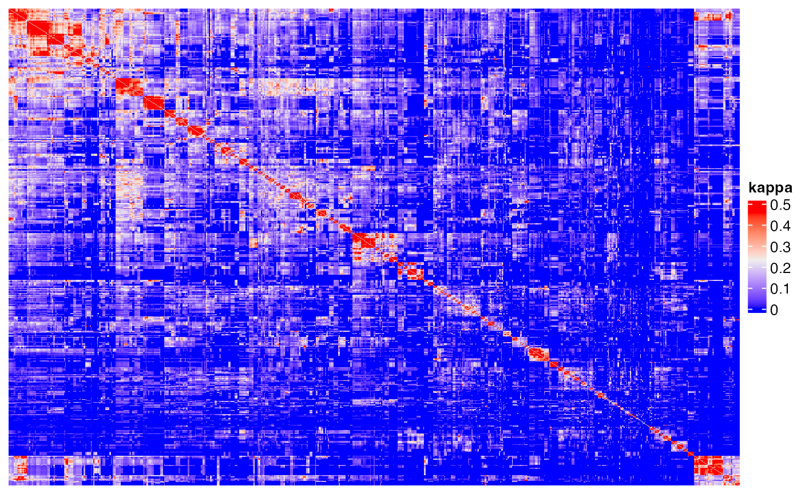
There are also two major types of methods for semantic similarities.
## ========================================
## simona version 1.4.0
## Bioconductor page: http://bioconductor.org/packages/simona/
## Github page: https://github.com/jokergoo/simona
## Documentation: https://jokergoo.github.io/simona/
##
## If you use it in published research, please cite:
## Gu, Z. simona: a Comprehensive R package for Semantic Similarity
## Analysis on Bio-Ontologies. BMC Genomics, 2024.
##
## This message can be suppressed by:
## suppressPackageStartupMessages(library(simona))
## ========================================
simona_opt$verbose = FALSE
dag = create_ontology_DAG_from_GO_db("BP", org_db = org.Hs.eg.db)The Sim_Lin_1998 is one of the classic semantic similarity method.
m = term_sim(dag, sig_go, method = "Sim_Lin_1998")## remove 20 terms with no annotation.
diag(m) = NA
Heatmap(m, name = "Sim_Lin_1998", show_row_names = FALSE, show_column_names = FALSE,
show_row_dend = FALSE, show_column_dend = FALSE)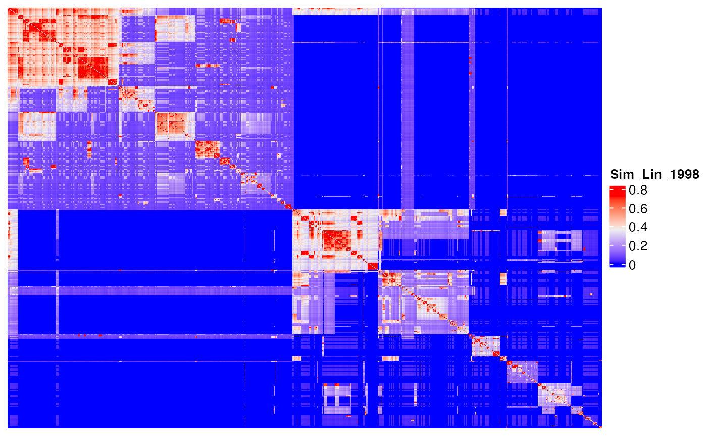